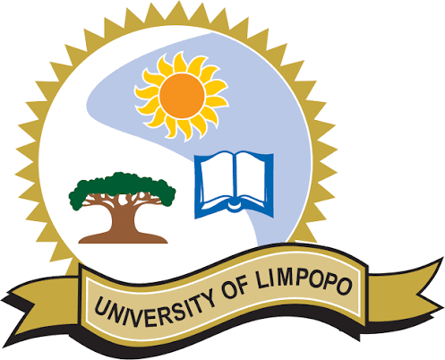
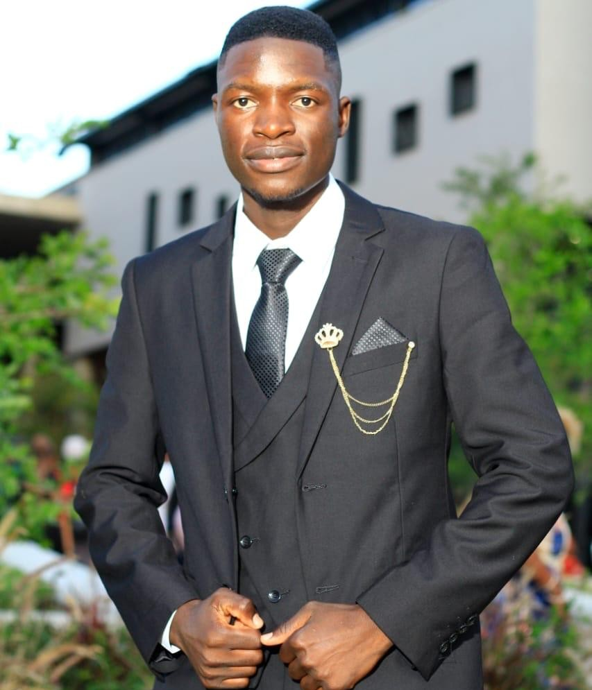

Current Research
Masters in Computer Science
University of Limpopo
Conducting postgraduate research in Artificial Intelligence, with a focus on Automatic Speech Recognition, Deep learning, Machine learning, Intelligent systems, data-driven problem solving and modern speech recognition techniques.

Research in Progress